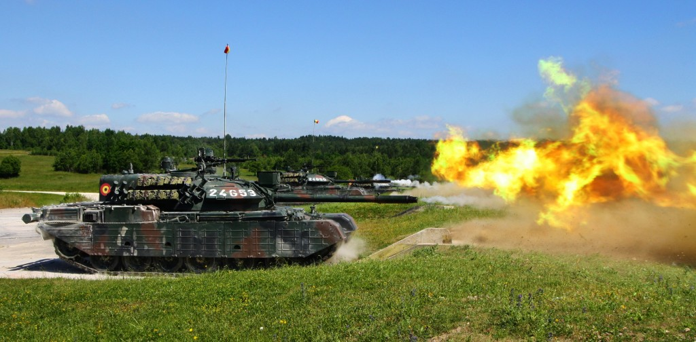
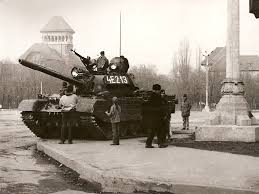
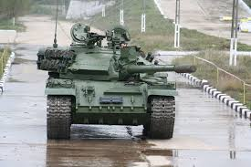

Noul tanc, proiectat între 1978-1986, a fost denumit TR-85-800 (Tanc Românesc model 1985 cu motor de 800 de cai putere). Producția a fost realizată între anii 1986 și 1990, cu un ritm mediu de 100 de exemplare pe an, la Fabrica de Mașini Grele Speciale a Întreprinderii "23 August" din București.
Modernizare
 În luna martie a anului 1994 este inițiat, prin ordinul S/M 1429, un program de modernizare a tancului TR-85M1 "Bizonul". La 14 aprilie 1994 acest proiect este aprobat de către Consiliul Suprem de Apărare al Țării. Proiectarea noului tanc a început în anul 1996, când au fost construite și primele două prototipuri. Firmele implicate în program au fost atât din străinătate (EADS, Thales, SFIM/ODS, RKS, Sagem, Kollmorgen, Racall), cât și din România (ELECTROMAGNETICA, ICPSP, Institutul 111), Agenția de Cercetare pentru Tehnică și Tehnologii Militare, Faur, IOR, Romarm, Hidromecanica Brașov, IOEL). Transformarea tancurilor TR-85 a început un an mai târziu. Obiectivul programului de modernizare a tancurilor a fost asigurarea interoperabilității cu tehnologia NATO. Au fost aduse îmbunătățiri sistemului de conducere al focului ,stabilizarii turelei si a tunului, mobilității, protecției, sistemelor de comunicații și a celor de vedere pe timp de noapte. TR-85M1 este de fapt un tanc nou, complet diferit de T-55, fiindcă are un șasiu modificat (extins), un motor diferit, o turelă nouă și sisteme îmbunătățite de conducere a focului, de stabilizare (echivalenta cu stabilizarea tancului frantuzesc Leclerc), de observare/ochire pe timp de zi si de noapte.
Utilizare
În 1993, România avea în inventarul armatei 632 de tancuri TR-85. În 2008 erau în inventarul Armatei Române 265 de tancuri TR-85 . Conform Institutului Internațional de Studii Strategice, în 2010 erau în uz 249 de tancuri TR-85 și 54 de tancuri TR-85M1.
Variante
|  |
 |
 |
| TR-85-800 - Prima variantă a tancului. |
TR-85M1 "Bizonul" - Versiunea modernizată a tancului TR-85, folosită în prezent de Forțele Terestre. |
Apariţii media
În cadrul primului episod al producției BBC "World's Toughest Driving Tests", prezentatorii britanici Will Mellor și Kirsten O'Brien au condus tancul TR-85M1 la Școala de Aplicație pentru Unități de Luptă "Mihai Viteazul" din Pitești. Episodul a fost difuzat pentru prima dată pe 23 februarie 2010 la postul BBC Three.